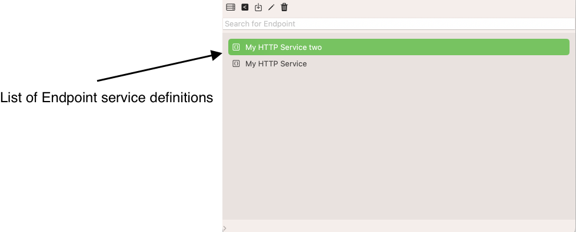
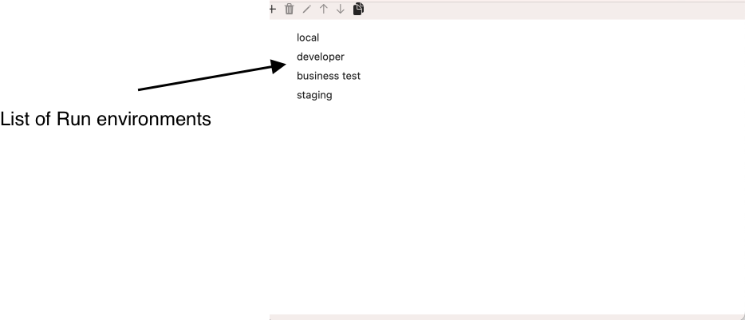
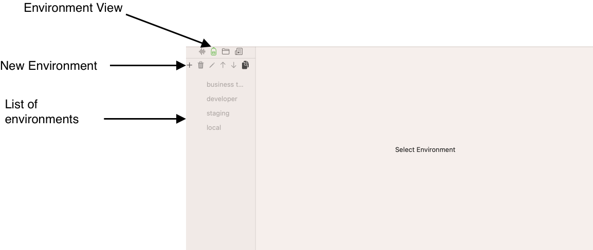
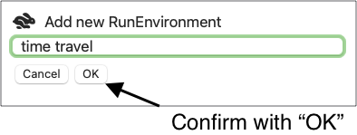
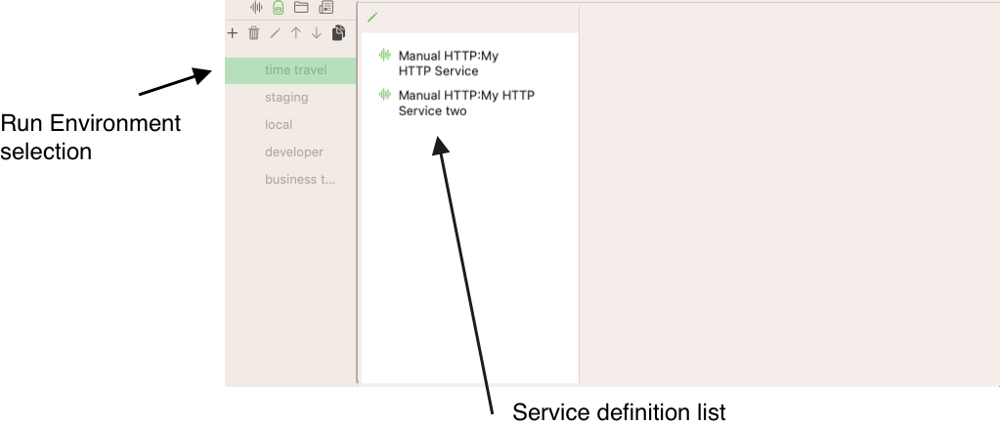
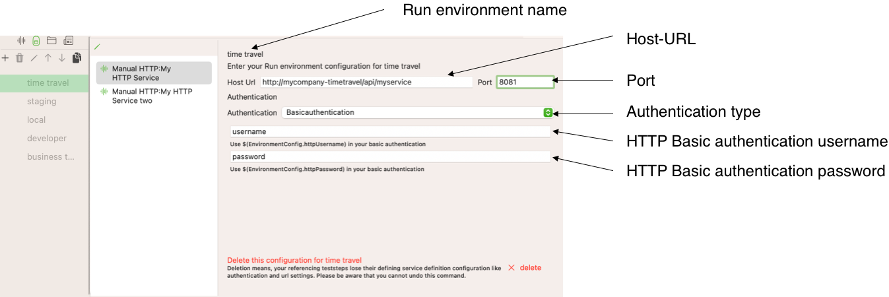
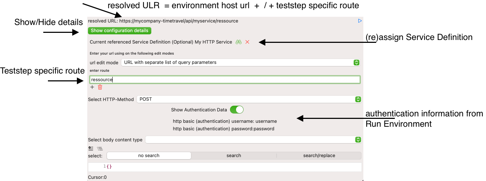

Run Environment
A Run Environment is a logical set of services, applications and configurations that companies use for their software development process to promote development artifacts step-by-step from the local developer machine to production.
Examples of a Run Environments
-
A local developer machineo
-
An integrated test environment that developers use to test their components in combination with other connected services, applications and components.
-
A business test environment that business experts use to test software against their business requirements
-
A load and performance test environment>
-
A staging environment with pre-production data
Typical properties of Run Environments
When you develop or test webservice, you will need to run these tests against several run environments. Some companies may have one or two Run Environments, others may have five to ten. The crucial part of testing is to work with different settings for these Run Environments while keeping the Testcase definition stable.
-
URLs will be different for Run Environments
-
Authentication information may vary , from no or Basic authentication in lower environments, to token or MFA based in higher environments
-
User information for authentication may vary. Users in lower environments may be exchanged by production-similiar users in higher environments.
Use Run Environments for your Teststeps
Typically you start by importing or creating a service definition (WSDL, Manual HTTP Service). These service definition hold in general all information that are independent of Run Environments.
You might have a list of Service definition like in the screenshot below: 
You may need to handle several Run Environments like in the next screenshot:
 You would proceed in the following order:
-
You create Run Environment Service Definitions i.e. you define the environment specific properties for your Service Definitions
-
You link your SOAP and HTTP-Teststeps to Service Definitions to use your Run Environment Service Definitions
-
You pick a Run Environment or run a Test execution and run your tests
We will walk through each of these steps below:
Create a Run environment
Switch to the view Environment and click the Button New Environment

This will open a sub dialog where you enter the name of the new Run Environment. Confirm with OK

You will see a new entry, which you select to configure the RunEnvironmentServiceDefinitions, if appropriate. You do this, if you want to switch easily between Run Environments and have predefinition URL and authentication settings. 
We configure the first Manual HTTP Webservice Definition as follows:

With this, we can proceed with the last two remain steps in the TestDefinition View:
We create an HTTP Teststep and link it to the Manual HTTP Service Definition
Create a HTTP Teststep with a Service Definition Reference
We can use Run Environments for Teststeps that reference a Service Definition. For SOAP Teststeps this is a mandatory step during creation and mandatory for WSDL-based schema validation, for HTTP Teststeps this is an optional step and very helpful.
We switch to the View Service Definition and create a HTTP Teststep that references the My HTTP Service Service Definition.

We select the Run Environment Time Travel and open the configuration details for teststep, we are done now. Authentication and base host URL information are kept centrally and referenced only. 
We can focus on the teststep specific parameters like HTTP Method and a specific route under test, see more about Create an HTTP Teststep and Create a SOAP Teststep.